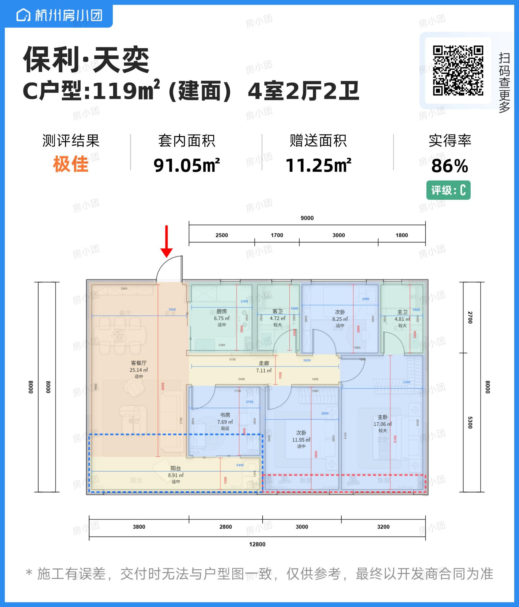

书房已融入客餐厅
根据红框意图，打开原书房朝客餐厅与走廊的隔墙，保留与相邻卧室、阳台的边界。这是拆改效果示意，承重性质和可拆性尚未核实；施工前必须由专业人员现场确认。
卧室按生活动线重排
三间床头均靠东侧实墙。主卧衣柜移至入户侧东墙，避开主卫入口；南次卧保留北侧 0.60 m 深衣柜，柜前约 0.85 m 通道；北次卧用 1.20 m 床和浅移门叠衣柜，采用主要单侧上下床。模型中床尾通道约为北次卧 0.66 m、南次卧 0.66 m、主卧 0.84 m；现场净尺寸仍须复核。餐区采用四人日常布置，留出入户、拉椅和厨房通道；阳台休闲椅朝长边放置。
标注尺寸按米建立
底边 3.80 + 2.80 + 3.00 + 3.20 = 12.80 m；进深 8.00 m。这些是图纸的尺寸轴线，不能等同于室内净尺寸或精确外墙边界。
未标注部分为推定。层高暂取 2.80 m；墙厚、门窗高度、局部隔墙与家具尺寸按图片比例近似。房间面积沿用原图，未用面积反推或拉伸模型。不能仅凭这张营销图保证完整 1:1，施工需 CAD 或实测复核。
俯视切换为真正的二维平面。图中虚线为面积说明，不是隔墙。方向以图纸为准；天气与光照是视觉演示，不是日照分析。窗台、窗高及装修均为方案假设，未沿用其他户型的落地窗设定。
免费素材与授权
Three.js 三维引擎（MIT）。实拍木地板与 HDRI：Wood Floor、Kloppenheim，Poly Haven CC0。
写实家具：Poly Haven Modern Arm Chair、Dining Chair、Modern Coffee Table，均为 CC0。已转为内嵌贴图 GLB，并按空间缩放摆放。
衣柜：Mirror wardrobe 120cm shelf type，interior model，CC BY 4.0，已缩放和组合。沙发：Gray L-Shaped Couch，AleixoAlonso；床：Modern Bed，Ngngan。均为 CC BY 4.0，已缩放并按房间摆放。厨柜、卫浴及部分小物件为程序化模型。